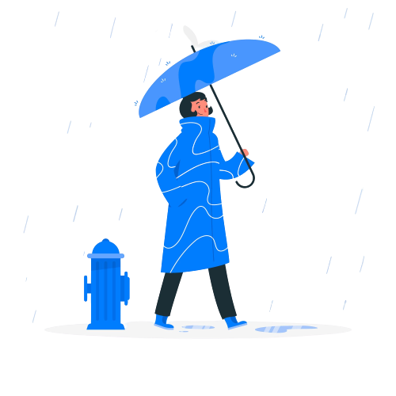

SOBRE O NOSSO PROJETO
O objetivo deste projeto é criar uma comunicação entre um banco de dados e um broker usando a plataforma Arduino. O Arduino será responsável por conectar-se ao banco de dados ao broker, permitindo o envio e recebimento de dados entre eles. Sendo assim mostrando os dados da temperatura e umidade em tempo real.

TEMPERATURA: {{temperatura}}
UMIDADE: {{umidade}}
SOBRE NÓS
Somos uma equipe da estação meteorológica contratada pela empresa SpaceX.
Nosso objetivo é fornecer dados climáticos em nosso site.
Este projeto foi desenvolvido por quatro programadores incríveis: Camila Jarosz,
Luiza Martins, Gabrielli Alves e Lucas Danker.